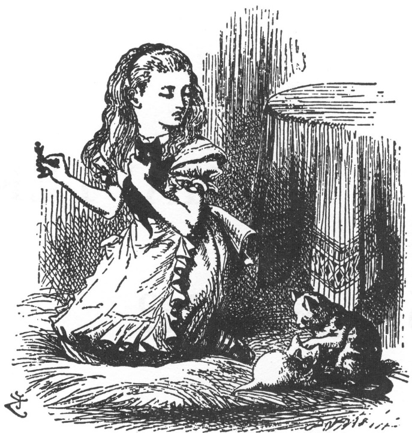

“Kızıl Majesteleri bu kadar yüksek sesle mırlamamalılar,” dedi Alice, gözlerini ovalayıp kedi yavrusuna saygıyla ama sert bir şekilde hitap ederken. “Beni uyandırdın... ah ne güzel bir düştü! Sen de benimleydin Pisi... Ayna dünyasında kaldığımız bütün o süre boyunca. Bunu biliyor muydun, tatlım?”
Bu kedi yavrularının da çok tatsız bir alışkanlıkları var (bunu bir keresinde Alice söylemişti): Onlara ne söylerseniz söyleyin, hep mırlarlar. ‘“Evet' derken mırlasalar, ‘Hayır’ derken miyavlasa-lar, ya da işte buna benzer bir kuralları olsa, o zaman insan onlarla konuşmasını sürdürür! Ama hep aynı şeyi söylerlerse, nasıl konuşulur ki onlarla?” demişti o zaman Alice.
Kedi yavrusu, şimdi de sadece mırlıyordu: bunun ‘evet’ mi yoksa ‘hayır’ mı olduğunu tahmin etmek imkânsızdı.
Bunun üzerine, Alice masanın üzerindeki satranç taşlarının arasından Kızıl Kraliçe’yi arayıp buldu: Sonra da şömine halısının üzerine diz çöküp, kedi yavrusuyla Kraliçe’yi karşı karşıya koydu. ”Bak Pisi!” diye haykırdı zafer kazanmışçasına ellerini çırparak. ”İşte şuna dönüştüğünü itiraf etmelisin!”
(“Ama yüzüne bile bakmadı,” demişti Alice, olanları daha sonra ablasına anlattığı sırada. “Kafasını başka bir yöne çevirdi ve

Kraliçe'yi görmezden geldi. Yine de yaptığından da birazcık utanmış gibiydi, o yüzden bence Kızıl Kraliçe’ye dönüşmüş olduğu kesin.”)
“Biraz daha dik otur, tatlım!” diye haykırdı Alice sevinçle kahkaha atarak. “Ne söylemen... Neye mırlaman gerektiğini düşünürken, Kraliçe’ye reverans yap! Unutma ki bu sana zaman kazandıracaktır.” Sonra kediyi kollarına aldı ve ‘hani sırf onun bir zamanlar Kızıl Kraliçe olması onuruna!’ yanağına ufacık bir öpücük kondurdu.
“Kar Tanem, cicim!” diye devam etti, yalanıp temizlenmeye hâlâ sabırla katlanan Beyaz Yavru’ya omzunun üstünden bakarak, ”Acaba, Dinah senin işini ne zaman bitirecek Beyaz Majesteleri? Düşümde öyle pejmürde oluşunun nedeni buydu galiba... Dinah, bir Beyaz Kraliçe’yi yalayıp temizlediğini biliyor muydun? Gerçekten öyle. Çok saygısızlık ediyorsun. Sana çok şaşırdım doğrusu!”
“Acaba Dinah neye dönüşmüştü?” diye çocukça konuşmasını devam ettirdi, rahat bir şekilde yere yerleşip bir dirseği kilimde, çenesini avucunun içine alıp yavruları seyrederken. “Hadi söyle Dinah, yoksa Yumurta Adam’a mı dönüşmüştün? Galiba öyleydi... Yine de bundan şimdilik arkadaşlarına söz etmesen iyi olur, çünkü emin değilim.”
“Bu arada Pisi, gerçekten keşke düşümde beraber olsaydık, çok hoşlanacağın bir şey vardı... Bir sürü şiir dinledim, hepsi de balıklarla ilgiliydi! Yarın sabah gerçek bir ziyafet çekeceksin. Sen her kahvaltı yaptığında, sana ‘Mors ile Dülger1 şiirini okuyacağım böylece kendini yediğinin istiridye olduğuna inandırabilirsin, tatlım!”
“Şimdi Pisi, bu düşü kim gördü, bir düşünelim bakalım. Bu çok ciddi bir soru tatlım, patini öyle yalayıp durma... Sanki Dinah bu sabah seni yalayıp temizlemedi! Görüyorsun ya Pisi, bu düşü ya ben gördüm, ya da Kızıl Kral. Tabii ki o da benim düşümün bir parçası... ama ben de onun düşünün bir parçasıyım! Bu düşü gören Kızıl Kral mıydı, Pisi? Sen onun karışıydın tatlım, bilmen gerekir... Ah, Pisi, bunu çözmeme yardım et! Eminim ki patin biraz bekleyebilir!” Ne var ki sinir bozucu kedi yavrusu, soruyu duymazdan gelip diğer patisine başlamıştı.
Sizce bu düşü kim gördü?
Altında bir sandal güneşli bir göğün,
Lâkin aheste salınıyor içinde düşlerin İlerliyor akşamlarından birinde Temmuzun...
Can atarak üç çocuk sokulmuş yanıbaşıma Etrafımda pürdikkat kulaklar, hevesli gözlerle Pek sevinçliler basit bir masal dinleyecekler diye...
Loş artık her taraf o güneşli göğün ardından:
Eridi yankılar, eser kalmadı hatıralardan:
Aldı güz ayazları sıcağını Temmuzdan.
Sürmekte izimi hayalet gibi hâlâ,
Alice bu uçuşan, gökkubbenin altında Ne ki görülmez uyanık gözlerle asla.
Can atarak yine çocuklar buluşacak masalla, Etrafımda hevesli gözleri, pürdikkat kulaklarıyla, Letafetleriyle sokulacaklar yanıbaşıma.
İçindeler Harikalar Diyarı’nın boylu boyunca, Düşleriyle yol alırlar günler gelip geçtikçe,
Düşleriyle yol alırlar yazlar eriyip bittikçe.
Engelsiz kapılırlar ırmağın akışına Lâkin aheste hep altın parıltılarda...
Lütfen söyleyin nedir zaten yaşam bir düşten başka?